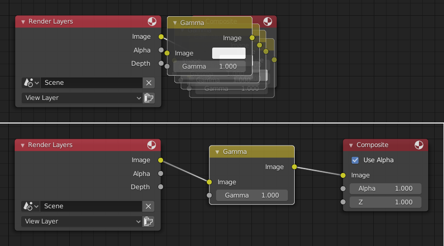

排列节点¶
吸附¶
- 吸附
Toggle snapping mode for moving nodes around.
- Snap Node Element Selector
This selector provide the following node elements for snap:
- 栅格
Snap to grid background.
- 节点X轴
Snap to left/right node border.
- 节点Y轴
Snap to top/bottom node border.
- 节点X轴/Y轴
Snap to any node border.
- 吸附目标
Which part to snap onto the target.
- 最近
最近点吸附到目标。
- 中心
Snap center onto target.
- 质心
Snap median onto target.
- 活动
Snap active onto target.
自动偏移¶
当将具有至少一个输入和一个输出插口的节点放到两个节点之间的现有连接上时，自动偏移 将根据方向设置自动移动左或右节点以为新节点腾出空间。 自动偏移 是一种有助于以交互方式组织节点布局而不会中断用户工作流程的功能。

Auto-offset is enabled by default, but it can be disabled from the editor's header.
你可以在移动节点时按 T 来切换偏移方向。
The offset margin can be changed using the Auto-offset Margin setting in the editing section of the Preferences.